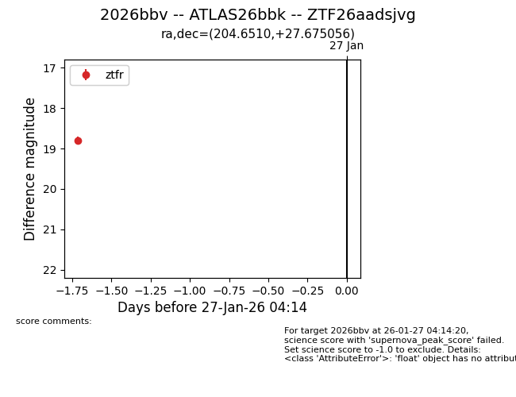
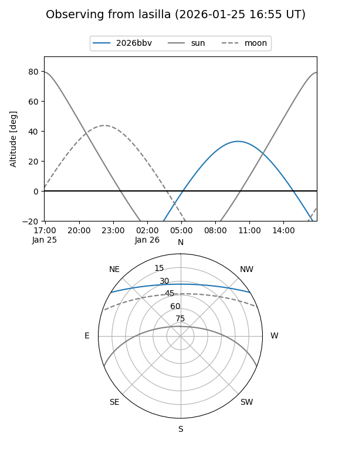
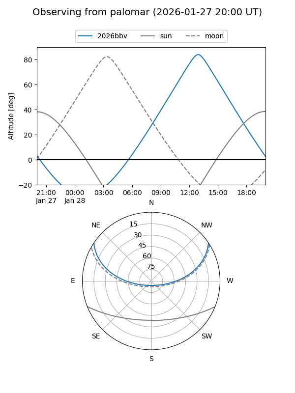

2026bbv
Target 2026bbv at 2026-01-27 00:56
Aliases and brokers:
FINK: link
Lasair: link
ALeRCE: link
TNS: link
YSE: link
alt names
ZTF26aadsjvg (ztf,fink_ztf)
2026bbv (tns,yse)
ATLAS26bbk (atlas)
Coordinates:
equatorial (ra, dec) = 204.6510,+27.67506
equatorial (HMS+DMS) = 13:38:36.23,+27:40:30.20
galactic (l, b) = (38.6324,+79.52121)
Flags:
Photometry:
last ztfr=18.80
1 ztfr detections
Lightcurve

Visibility


Additional plots